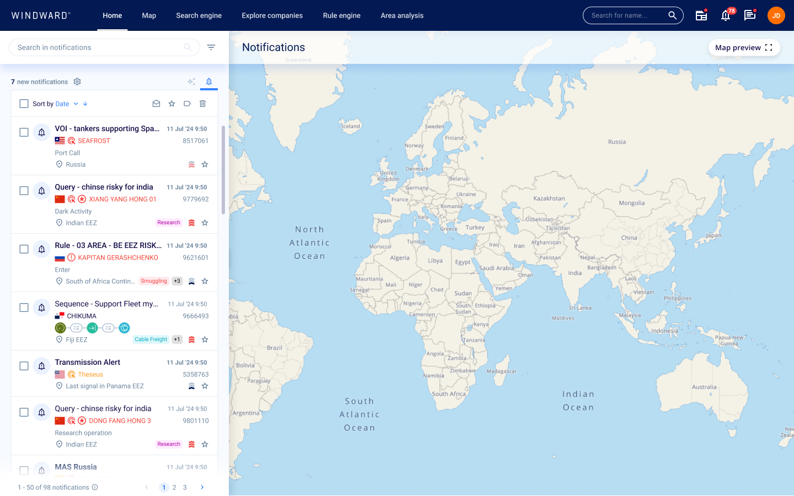
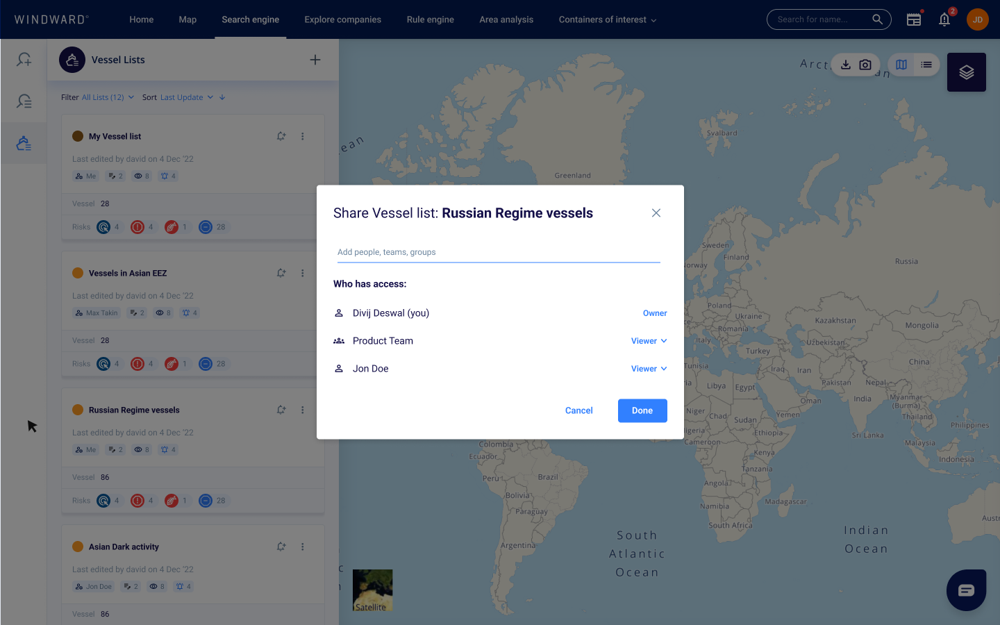
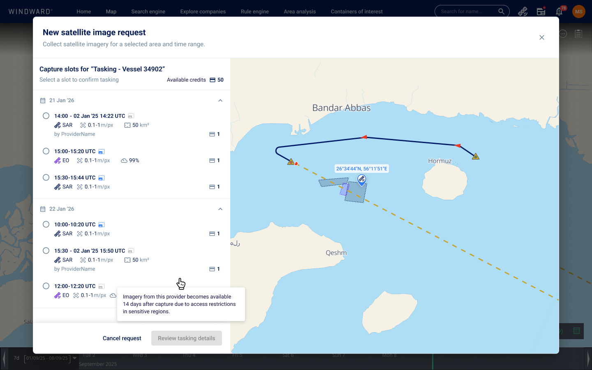
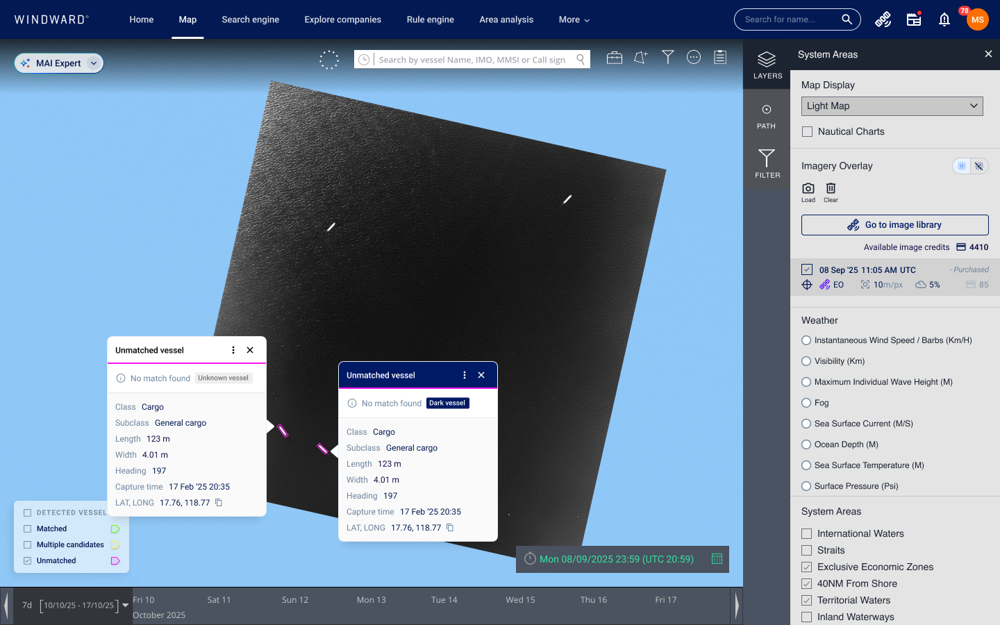

SIX AREAS I OWNED

NOTIFICATIONS
2024–2026, epic owner
I designed how analysts manage every alert from one place, and made what lands in their inbox worth reading, from the home-page inbox to a whole family of emails.
- Notification inbox, configuration center and digest email
- Event and entity emails with an embedded map
- Emails for tasking orders, RF approvals, watch-boxes and saved query alerts
- An in-product walkthrough for the general release
With Dror Salzman, Debby Noy and Mai Armon

SHARING & PERMISSIONS
2025–2026, user management and access control
Analysts build up vessel lists, areas and searches over months. I designed how each one stays private, goes to a team or goes company-wide, and what happens when people leave or access breaks.
- Sharing indicators and permission flows for VOIs, AOIs and saved queries
- Transfer of ownership and recovery for broken queries
- Sharing for imagery, tasking and archive images
- A Frontegg theme and account emails in the design system
With Omer Barhanin, Nirit Markovich and Guy Mizrahi

SATELLITE TASKING
2025–2026, imagery tasking flow
When an analyst spots something suspicious, they need a fresh image of it. I designed the path from a point on the map to a satellite order, and the updates that follow it.
- Dropping a marker on the search and early-detection maps
- Adding it to a tasking, with footprint options and provider
- A simpler image acquisition flow inside the map
- Status emails for each stage of the order
With Gur Sender and Sharon Feldstein

IMAGE TAGGING & CORRELATION
2026, human-in-the-loop imagery
Detection models miss boats, and correlation sometimes matches the wrong vessel. I designed tools that let people correct the AI without leaving their investigation.
- Marking objects the AI missed, right on the image
- Editing detection metadata for internal teams
- Overriding a correlation from the vessel card
- Transmitting-or-dark status and a PDF export of the MAI Expert report
With Debby Noy, Sharon Feldstein and Michaela Sherbu Cohen
RF & PROJECTED PATH
2026, radio-frequency detection and route prediction
I made radio signals readable by showing which detections come from the same emitter, and designed three phases of the projected path, which predicts where a vessel will be when the satellite passes.
- RF fingerprinting on the map and per detection
- Projected path with vessel input and an optional identifier
- A coherent route with pre- and post-pass slots
- Legend controls moved into the main toolbar
With Michaela Sherbu Cohen
AREA MONITORING
2026, with the Vantor partnership
Area monitoring lets a team keep watch over a stretch of sea with recurring imagery. I designed where those missions live, how their images are browsed and how users ask for access.
- The mission watchboxes tab in the asset library
- A new satellite images table to match it
- Requesting access to restricted images
- The partnership demo used in pre-sales
With Debby Noy, Gur Sender and Michaela Sherbu Cohen